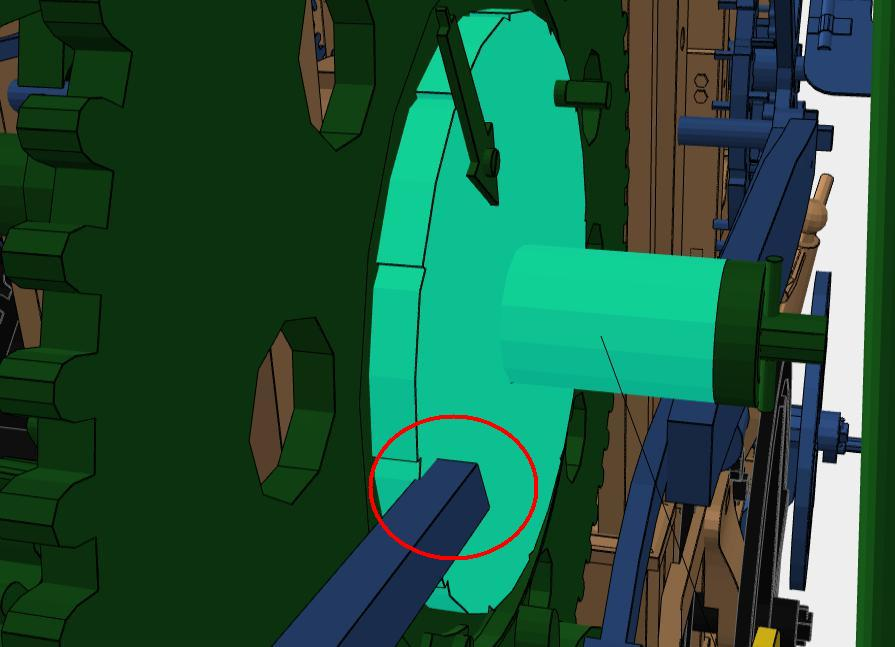
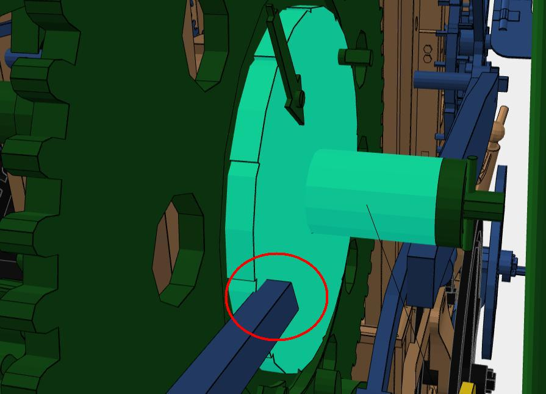
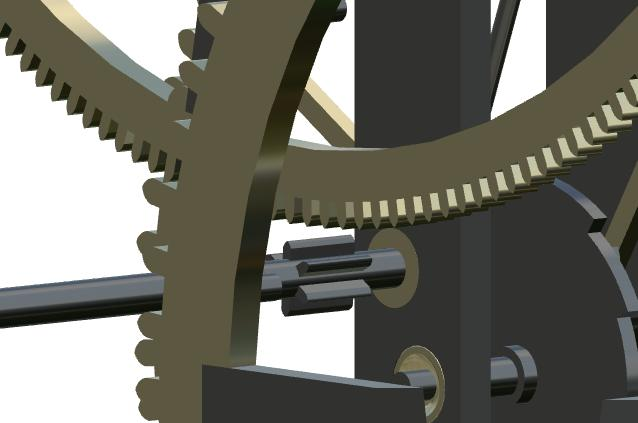

Le projet Chronospédia
Vérités et mensonges
(English version)
Avertissement : ce site n'engage aucun employeur et est établi
à titre de chercheur indépendant. Il contient des critiques constructives
et ne cherche en aucun cas à dénigrer.
Rétablir la vérité n'est pas dénigrer, c'est le devoir du chercheur.
Les castors font de beaux barrages, mais détruisent les forêts.
Le projet Chronospédia
de F. Simon-Fustier et K. Protassov
est un projet développé à partir d'une activité de modélisation 3D
d'horloges d'édifice menée depuis 2012 environ
par l'atelier de M. Simon-Fustier
dans la banlieue lyonnaise et déclinée au travers
de la modélisation de l'horloge horizontale de l'Encyclopédie
de Diderot et d'Alembert, de l'horloge d'édifice du château
de Vaux-le-Vicomte, de l'horloge électromécanique
de l'hôtel de ville de Cluses, des grandes horloges à carillon
du palais de Mafra et de quelques autres.
Ce projet a été étendu à partir de 2020 sous l'impulsion de K. Protassov
et a maintenant comme ambition de sauvegarder le savoir-faire horloger,
essentiellement en ce qui concerne la pendulerie, en s'appuyant
sur la 3D, mais aussi en intégrant un certain nombre d'autres types
de données.
Cela dit, la motivation première du projet ne semble pas être le patrimoine,
ni la recherche sur le patrimoine, puisque les dirigeants du projet
n'ont jamais mené de travaux systématiques d'inventaire horloger,
ni publié de travaux de recherche sur l'histoire de l'horlogerie
ou sur la technique horlogère. Il semble que le patrimoine et la 3D
s'insèrent bien plutôt
dans une stratégie d'expansion et correspondent avant tout à un modèle
économique.
Ayant suivi le projet depuis 2015, j'ai été amené à adopter
une attitude assez critique à son égard, notamment du fait des
dangers qu'il représente pour les vraies priorités en matière de patrimoine
horloger, et du fait du peu de recul des auteurs du projet
en matière de 3D.
Dans une précédente version de ce site, j'avais analysé les problèmes
du projet sous un certain nombre de facettes, mais il me semble que mes
analyses ont été mal comprises. J'avais voulu réaliser des analyses
courtes, sur quelques pages, mais cela a multiplié leur nombre,
nuisant ainsi peut-être à leur lisibilité.
J'ai donc décidé d'être plus concis, dans l'espoir d'être mieux compris.
Je résume en quelques mots ce que je considère être
le danger considérable que représente Chronospédia :
- Le projet n'est pas ouvert et les modèles 3D ne sont pas accessibles
en format source (SolidWorks), ni même en format d'échange STEP,
et ne le seront peut-être jamais, contrairement à ce qui est
affirmé ici
en 2022.
- Il semble n'y avoir aucune supervision scientifique, aucune certification
des modèles, aucun moyen de vérifier le travail fait par le projet.
- Le projet ne semble avoir strictement rien concrétisé
pour la sauvegarde du savoir-faire
horloger, aucune archive d'horloges, aucun rapport de
restauration, pas même une documentation technique d'une horloge restaurée
par le projet n'a été mise en ligne.
- La focalisation sur la 3D signifie que tout l'inventaire
du patrimoine horloger est actuellement négligé et que ce patrimoine, déjà
en grand danger (la DRAC ne fait rien pour lui), va encore
se dégrader davantage.
- Les réalisations du projet Chronospédia ne semble intégrer aucun chercheur
en horlogerie technique. Il n'y en a pas dans le comité de pilotage.
Il n'y a même qu'un seul horloger dans tout le comité de pilotage.
Du coup, il n'y a aucune garantie de qualité scientifique
dans ce projet et aucun chercheur sérieux n'utilisera les modèles
du projet, ou même les « recettes » non sourcées
et non justifiées données sur le site. Certains amateurs
ou musées y trouveront peut-être un intérêt, mais pas quelqu'un
qui fait un travail de recherche sérieux.
- Par ailleurs, la 3D est abordée de manière simpliste, le projet faisant
croire à une expertise en 3D, alors que cette « expertise »
se limite à la présence de quelques
personnes dans le projet avec une expérience
de logiciels comme SolidWorks. La 3D, c'est bien plus que cela !
- Le projet se base aussi sur une rhétorique contestable,
et notamment sur des affirmations inexactes sur les premières réalisations
en 3D pour l'horlogerie, qui n'émanent pas du tout de Chronospédia
(ni de moi, d'ailleurs), ou sur l'absence de ressources récentes
pour l'horlogerie, ce qui est faux.
- Enfin, le projet ne prend pas du tout en compte les besoins
des chercheurs et fait comme s'il concentrait tout le savoir de la recherche.
Or, les auteurs de Chronospédia n'ont à leur actif aucune publication
en horlogerie, à part une présentation (anonyme) du projet dans
la revue de l'AFAHA. Ils n'ont notamment jamais publié
la moindre description technique d'une horloge.
L'une des conséquences des observations précédentes est que
le travail de Chronospédia n'est pas durable et en particulier
que les différentes modélisations devront un jour être refaites,
afin de les rendre véritablement ouvertes et de les soumettre
à la critique de la communauté scientifique.
Plus concrètement, les modèles 3D de Chronospédia ne sont pas exempts
d'erreurs et bénéficieraient d'une plus grande ouverture. Je vais donner
quelques exemples pour le démontrer. Ces observations se basent
sur la mise à jour de Chronospédia d'août 2025, laquelle ne propose
toujours pas les fichiers source des modèles 3D.
- Dans le modèle de l'horloge décrite dans l'Encyclopédie de Diderot
et d'Alembert (https://www.chronospedia.com/s/chronospedia/item/13665), qui date
de 2015, on peut remarquer entre autres que certaines roues engrènent mal
(par exemple les dents du pignon de la roue d'échappement) :

Dans les vues qui précèdent, le pignon de gauche (de la roue d'échappement)
n'est pas du tout en contact avec la roue de droite, alors qu'il devrait
l'être.
Mais il apparaît aussi que les roues coniques comme celles-ci
sont mal construites,
les dents étant simplement adossées à un cone, sans que la roue
ait réellement été construite avec ses dents. La roue sans les dents est

et les dents individuelles sont du genre
Ce problème n'est peut-être pas très visible au premier abord,
mais la mise en ligne d'août 2025 permet enfin de confirmer
ces approximations. Celles-ci sont cependant compréhensibles,
car la construction d'une roue conique n'est pas facile.
Il faut noter que ce type de construction par collage
a encore été utilisé dans une horloge Odobey modélisée vers 2023.
Il est possible de faire mieux. La mise à disposition
des sources SolidWorks à tous (et pas seulement aux partenaires
du projet) permettrait à d'autres de combler les lacunes
des modèles.
En observant bien les roues coniques, comme la suivante,
on voit aussi qu'elles ne respectent
pas parfaitement celles de l'Encyclopédie. L'équipe de Chronospédia a donné
à la roue précédente un profil extérieur cylindrique, alors qu'il n'y a pas
de tel profil dans les planches de l'Encyclopédie et que rien n'empêchait de
coller à la description de l'Encyclopédie.

Par ailleurs, dans toute la modélisation, de curieuses vis à tête en bulbe
fendu ont été employées,
alors qu'elles ne sont pas présentes
dans les planches. Les vis que l'on distingue sur l'extrait de la planche
ont des têtes hexagonales.
- En examinant les modèles de Chronospédia, ou du moins les versions dégradées (glTF=version dégradée) en ligne, on voit nettement une évolution rapide
du savoir-faire de l'équipe de Chronospédia, ce qui ne pouvait pas facilement
être distingué avant la mise à jour du 9 août 2025 de Chronospédia.
Ce n'est que depuis cette date que l'on peut un peu mieux examiner
les modélisations de l'horloge de l'Encyclopédie et de celle du château de
Vaux-le-Vicomte.
On remarque par exemple à Vaux-le-Vicomte le grand soin apporté
à la conception des pièces, un effort de fidélité, et aussi l'emploi
de textures, absentes du modèle de l'Encyclopédie.
Dans le modèle de l'Encyclopédie, les vis n'avaient pas de filetage,
à Vaux-le-Vicomte elles en ont. Les roues coniques sont mieux construites,
ainsi que beaucoup d'autres pièces. Les choses ne sont pas parfaites
pour autant. Les paliers de l'arbre du bras d'arrêt de la sonnerie,
par exemple, ont l'un des trous qui n'est pas centré. On comprend bien
que ce trou n'était pas centré à Vaux-le-Vicomte, du fait du bouchonnage
(lui, non modélisé !), mais le positionnement théorique
du trou aurait dû être centré. Sur d'autres horloges du même type, il l'est.
Ceci pose évidemment la question de la fidélité de la modélisation.
Une modélisation doit-elle représenter l'œuvre telle qu'elle devait être,
ou telle qu'elle est, après des décennies d'entretien ?
Sans doute faudrait-il faire les deux modélisations.
La perte de qualité des modèles en ligne est visible sur certaines pièces,
par exemple cette molette :

À gauche, tout a l'air parfait, mais si on regarde de près les crénelures
(détail à droite, ce ne sont pas des dents), on s'aperçoit qu'il y a beaucoup
d'irrégularités. Les « dents » sont toutes différentes.
Bien que le modèle soit de 2015, ce problème est tout récent, puisqu'il
résulte de la transformation du modèle SolidWorks en glTF.
C'est pour cela que l'on peut dire que les modèles glTF sont dégradés.
Ce problème n'est pas anecdotique et aurait pu être évité, mais si personne
ne regarde les modèles de près, et, surtout, si personne ne peut regarder
les modèles de près, les problèmes de ce genre risquent fort de ne jamais
être résolus.
- Le modèle créé pour l'horloge électromécanique de Cluses en 2018
(https://www.chronospedia.com/s/chronospedia/item/13668) semble
par contre assez bien fait. L'horloge est particulièrement complexe
et les pièces semblent bien modélisées (aux questions de paramétrage
près). Un grand soin a été apporté aux détails.
Voici quelques vues de cette modélisation, à savoir
le limaçon des heures, une roue conique (avec des profils en développante
probablement créés avec une bibliothèque de SolidWorks), une vis
sans fin et la roue avec laquelle cette vis engrène :
- De même, les modèles créés pour les deux grandes horloges
du palais de Mafra en 2019 (nord et sud)
sont aussi assez bien faits, même si ces horloges sont beaucoup plus
simples que celle de Cluses et que les deux horloges de Mafra
n'en forment pratiquement qu'une, tellement il y a d'éléments
analogues. Par ailleurs, dans chaque horloge, beaucoup d'éléments
sont des copies les uns des autres, et le nombre total de pièces
n'est donc pas représentatif de la complexité de l'horloge.
Cela dit, on peut tout de même relever ici au moins un petit
défaut au niveau d'une détente qui pénètre dans le disque portant
les chevilles de déclenchement. Ce défaut est en grande partie
imputable à la conception non paramétrée de la modélisation :
 

- Dans le modèle d'horloge comtoise
d'édifice (https://www.chronospedia.com/s/chronospedia/item/13672), un modèle créé vers 2024, le pendule apparaît mal suspendu. On peut s'en convaincre en
comparant les deux vues suivantes de l'animation :

Non seulement la tige inférieure oscille autour d'un point beaucoup
trop bas, mais par ailleurs l'élément inférieur de fixation
de la lame de suspension est mobile par rapport à la tige,
alors qu'il devrait être fixe... Ce genre d'approximation n'est
pas tellement digne d'un horloger !
- Dans le modèle d'horloge en cage provenant du musée Paccard,
(https://www.chronospedia.com/s/chronospedia/item/13669), un modèle créé vers 2024
par Corentin Parot et Hugo Bourdeix pour le compte de Chronospédia,
la roue de compte (C) est montée à l'envers, le palpeur (A) n'est
même pas en contact avec elle et le doigt d'avancement (B)
est incomplet. Visiblement ce modèle a été construit sans supervision
et tests adéquats.
- Dans le modèle d'horloge en cage provenant du musée du temps,
(https://www.chronospedia.com/s/chronospedia/item/13670),
un modèle aussi créé vers 2024, l'un des pignons n'engrène pas avec sa roue :

les dents d'une roue pénètrent dans une vis sans fin :
ou encore les ailes d'un pignon se superposent
aux fuseaux d'un pignon lanterne :
- Il y a sans doute d'autres problèmes, mais je n'ai jeté qu'un
coup d'œil rapide aux modèles mis en ligne
en août 2025.
Bien que l'équipe de Chronospédia ait rapidement perfectionné
sa maîtrise de SolidWorks, il n'empêche que dans plusieurs modélisations
récentes, il y a encore des problèmes.
Certains de ces problèmes sont manifestement dus à une supervision
inadéquate, tant des modélisations elles-mêmes,
mais même du projet dans son ensemble.
Cela dit, tous ces problèmes peuvent être corrigés, mais pour qu'ils le soient,
il faut davantage d'ouverture, il faut que les modèles complets
(SolidWorks et STEP) soient entièrement publiquement accessibles,
sans restrictions. La communauté pourra alors participer
à l'examen approfondi des modèles, à des discussions sur les modèles,
et à leur perfectionnement, ce qui n'est actuellement pas possible.
Pour compléter encore le contexte de l'utilisation de la 3D
dans Chronospédia, qui n'a rien de novatrice, on pourra aussi lire :
Le contenu de cette page s'enrichit régulièrement.
D. Roegel
Dernière modification : 30 septembre 2025.